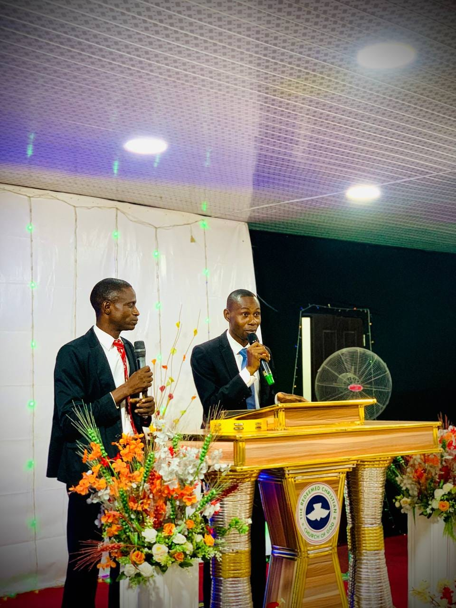

Our mission
To love God passionately, make disciples intentionally, and transform our world practically, one life at a time.
Get to know us
How it began
Praise and Power was born from a simple but burning prayer: "Lord, give us a place where broken people find wholeness, where the lost are found, and where every life discovers its purpose in You."
From humble beginnings in a living room, God grew this community into a vibrant congregation. Every chapter of our story is a testimony to His faithfulness.
Today, Praise and Power stands as a lighthouse in the community, serving families through worship, discipleship, and practical care.

What drives us
To love God passionately, make disciples intentionally, and transform our world practically, one life at a time.
To see every individual walk in their God-given identity, purpose, and destiny, equipped for a life of lasting impact.
Faith. Love. Integrity. Excellence. Community. We do not just preach these; we live them.
What we believe
The Bible is the inspired, infallible, and authoritative Word of God, our ultimate guide for life and faith.
One God, eternally existing in three persons: Father, Son, and Holy Spirit, equal in nature, glory, and power.
Salvation is a gift from God, received through faith in Jesus Christ alone. His death and resurrection secured our redemption.
The Holy Spirit is at work today through His gifts, His power, and His ongoing work in every believer's life.
The Church is the body of Christ: a community called to worship, disciple, and serve the world in His name.
Jesus Christ will return personally and visibly to establish His eternal kingdom.
Join us
Families, individuals, and first-time guests are welcome.
Explore the Word and bring faith into everyday life.
Corporate intercession and worship. Come and pray with us.